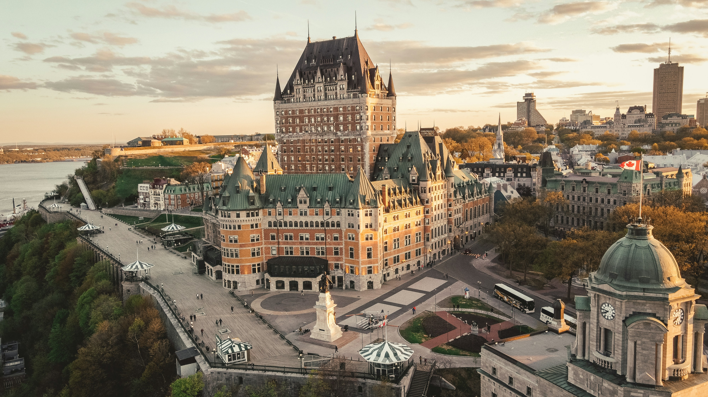
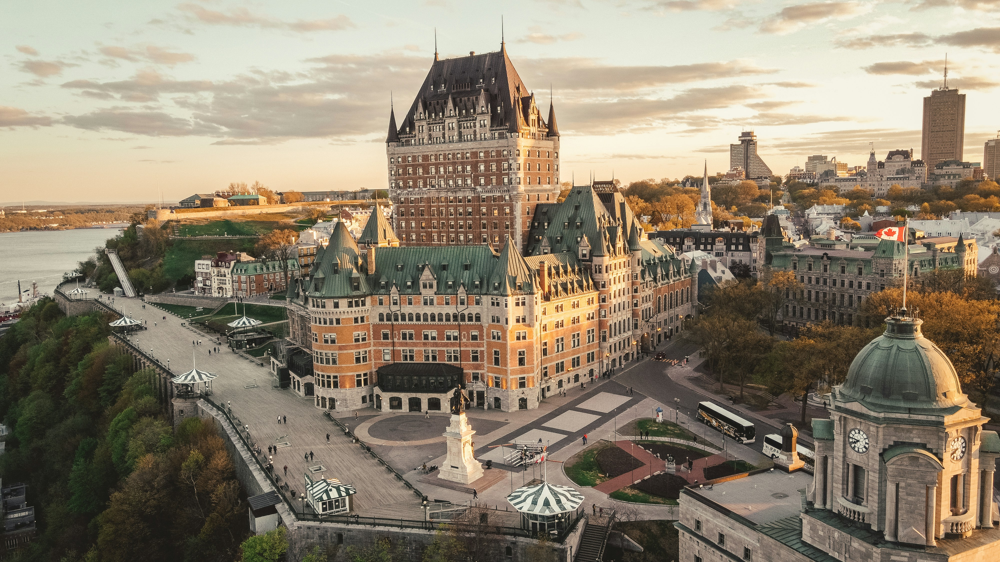

How is french outside of Europe and Africa?
The language’s presence is limited outside of Africa and Europe. While it’s possible to find French speakers in North America and overseas, it’s not like the language is officially recognized overall. However, there are three countries where French is recognized. There’s Canada, with Quebec as the state with the most speakers, Haiti, and Vanuatu.
 
